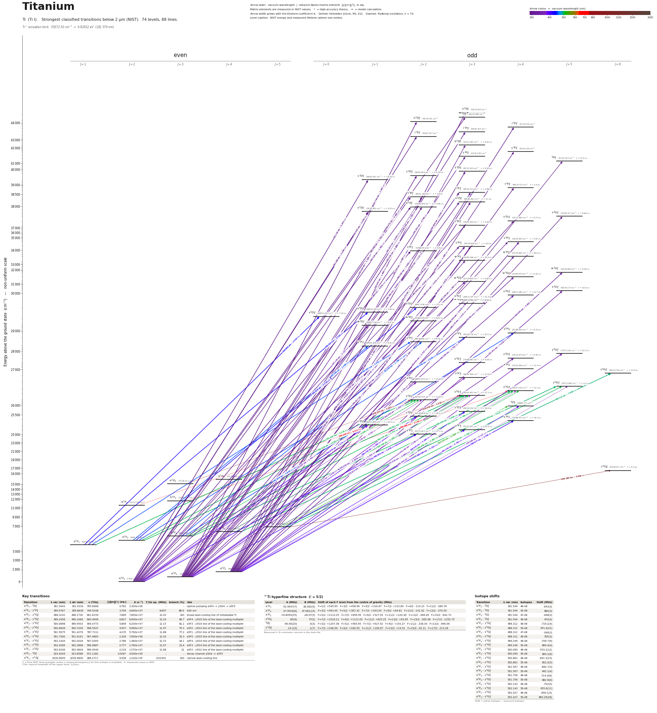

Titanium energy level diagram
Energy levels and transitions of neutral titanium (Ti I): the 88 strongest classified lines below 2 µm from the NIST Atomic Spectra Database and the 74 levels they connect, each line with its vacuum wavelength, frequency and, for 88 of them, the reduced dipole matrix element derived from the NIST transition rate. Measured lifetimes, transition rates, hyperfine constants and isotope shifts from the literature are included, each with its citation.
Hover a line or a level to isolate it, click to keep it selected. Scroll to zoom, drag to move.

Download: diagram (PDF) diagram (SVG) transitions (CSV) levels (CSV) source code

Key transitions of titanium
| Transition | λ vac (nm) | λ air (nm) | ν (THz) | |⟨J‖er‖J′⟩| (ea₀) | A (s⁻¹) | Γ/2π up. (MHz) | branch (%) | Use |
|---|---|---|---|---|---|---|---|---|
| a 3F4 – 5D°4 | 391.5443 | 391.4334 | 765.6668 | 0.783 | 2.300e+06 | – | – | optical pumping a3F4 -> y5D4 -> a5F5 |
| a 3F4 – y 3F°4 | 399.9767 | 399.8636 | 749.5248 | 3.709 | 4.840e+07 | 8.697 | 88.6 | 400 nm |
| a 5F5 – y 5G°6 | 498.3120 | 498.1730 | 601.6159 | 7.869 | 7.800e+07 | 12.43 | 100 | broad laser-cooling line of metastable Ti |
| a 5F4 – y 5G°5 | 499.2458 | 499.1066 | 600.4906 | 6.827 | 6.900e+07 | 12.24 | 89.7 | a5F4 - y5G5 line of the laser-cooling multiplet |
| a 5F3 – y 5G°4 | 500.0898 | 499.9503 | 599.4773 | 5.869 | 6.200e+07 | 12.15 | 81.2 | a5F3 - y5G4 line of the laser-cooling multiplet |
| a 5F2 – y 5G°3 | 500.8606 | 500.7209 | 598.5547 | 4.957 | 5.660e+07 | 11.97 | 75.3 | a5F2 - y5G3 line of the laser-cooling multiplet |
| a 5F1 – y 5G°2 | 501.5675 | 501.4276 | 597.7111 | 4.235 | 5.760e+07 | 11.88 | 77.2 | a5F1 - y5G2 line of the laser-cooling multiplet |
| a 5F5 – y 5G°5 | 501.7560 | 501.6161 | 597.4865 | 2.328 | 7.900e+06 | 12.24 | 10.3 | a5F5 - y5G5 line of the laser-cooling multiplet |
| a 5F4 – y 5G°4 | 502.1426 | 502.0026 | 597.0265 | 2.786 | 1.380e+07 | 12.15 | 18.1 | a5F4 - y5G4 line of the laser-cooling multiplet |
| a 5F3 – y 5G°3 | 502.4269 | 502.2868 | 596.6887 | 2.777 | 1.760e+07 | 11.97 | 23.4 | a5F3 - y5G3 line of the laser-cooling multiplet |
| a 5F2 – y 5G°2 | 502.6246 | 502.4844 | 596.4540 | 2.218 | 1.570e+07 | 11.88 | 21 | a5F2 - y5G2 line of the laser-cooling multiplet |
| a 5F5 – 5D°4 | 524.0044 | 523.8586 | 572.1182 | 0.506* | 4.000e+05 | – | – | decay channel y5D4 -> a5F5 |
| a 5F5 – z 5G°6 | 1039.9649 | 1039.6800 | 288.2717 | 0.938 | 1.220e+05 | 0.01941 | 100 | narrow laser-cooling line |
λ, ν from NIST level energies unless a measured frequency for this isotope is available. A: measured value or NIST. Γ/2π: natural linewidth of the upper level, 1/(2πτ).
47Ti hyperfine structure (I = 5/2)
| Level | A (MHz) | B (MHz) | Shift of each F level from the centre of gravity (MHz) |
|---|---|---|---|
| a 3F3 | -52.9047(7) | 28.082(9) | F=1/2: +545.90 F=3/2: +458.96 F=5/2: +316.87 F=7/2: +123.84 F=9/2: -114.23 F=11/2: -389.76 |
| a 3F4 | -37.9918(6) | 37.681(10) | F=3/2: +493.40 F=5/2: +387.32 F=7/2: +243.04 F=9/2: +64.81 F=11/2: -141.92 F=13/2: -370.50 |
| a 5F5 | -74.8450(25) | -28.67(5) | F=5/2: +1110.25 F=7/2: +856.99 F=9/2: +527.93 F=11/2: +120.49 F=13/2: -368.49 F=15/2: -942.73 |
| z 5G°6 | -85(9) | 77(5) | F=7/2: +1518.12 F=9/2: +1112.00 F=11/2: +625.25 F=13/2: +63.65 F=15/2: -565.98 F=17/2: -1255.75 |
| 5D°4 | -96.60(20) | -0(3) | F=3/2: +1207.38 F=5/2: +965.95 F=7/2: +627.92 F=9/2: +193.27 F=11/2: -338.04 F=13/2: -966.06 |
| y 5G°6 | -14.2(3) | -1(7) | F=7/2: +248.06 F=9/2: +184.50 F=11/2: +106.67 F=13/2: +14.51 F=15/2: -92.11 F=17/2: -213.28 |
Measured A, B constants; sources in the data file.
Isotope shifts
| Transition | λ vac (nm) | Isotopes | Shift (MHz) |
|---|---|---|---|
| a 3F4 – 5D°4 | 391.544 | 46-48 | -943(3) |
| a 3F4 – 5D°4 | 391.544 | 50-48 | 884(3) |
| a 3F4 – 5D°4 | 391.544 | 47-48 | -448(3) |
| a 3F4 – 5D°4 | 391.544 | 49-48 | 474(3) |
| a 5F5 – y 5G°6 | 498.312 | 46-48 | -716.2(4) |
| a 5F5 – y 5G°6 | 498.312 | 50-48 | 671.6(21) |
| a 5F5 – y 5G°6 | 498.312 | 47-48 | -346(3) |
| a 5F5 – y 5G°6 | 498.312 | 49-48 | 355(3) |
| a 5F4 – y 5G°5 | 499.246 | 46-48 | -706.7(9) |
| a 5F4 – y 5G°5 | 499.246 | 50-48 | 669.4(4) |
| a 5F3 – y 5G°4 | 500.090 | 46-48 | -703.2(12) |
| a 5F3 – y 5G°4 | 500.090 | 50-48 | 660.1(6) |
| a 5F2 – y 5G°3 | 500.861 | 46-48 | -691.3(23) |
| a 5F2 – y 5G°3 | 500.861 | 50-48 | 652.0(5) |
| a 5F1 – y 5G°2 | 501.567 | 46-48 | -682.7(3) |
| a 5F1 – y 5G°2 | 501.567 | 50-48 | 642.1(4) |
| a 5F5 – y 5G°5 | 501.756 | 46-48 | -714.0(6) |
| a 5F5 – y 5G°5 | 501.756 | 50-48 | 682.9(6) |
| a 5F4 – y 5G°4 | 502.143 | 46-48 | -702(5) |
| a 5F4 – y 5G°4 | 502.143 | 50-48 | 670.6(11) |
| a 5F3 – y 5G°3 | 502.427 | 46-48 | -690.1(5) |
| a 5F3 – y 5G°3 | 502.427 | 50-48 | 660.29(28) |
Shift = ν(first isotope) − ν(second isotope).
Listed Ti transitions below 2 µm
| Lower level | Upper level | λ vacuum (nm) | λ air (nm) | ν (THz) | Type | |⟨J‖er‖J′⟩| (ea₀) | A (s⁻¹) | Branching (%) | Source of matrix element / A |
|---|---|---|---|---|---|---|---|---|---|
| a 3F2 | 3G°3 | 226.4719 | 226.4018 | 1323.7515 | E1 | 0.961 NIST | 2.300e+07 NIST | – | NIST ASD (accuracy D) |
| a 3F3 | o 3D°2 | 227.7405 | 227.6702 | 1316.3775 | E1 | 1.947 NIST | 1.300e+08 NIST | – | NIST ASD (accuracy C) |
| a 3F4 | o 3D°3 | 228.0671 | 227.9967 | 1314.4924 | E1 | 1.963 NIST | 9.400e+07 NIST | – | NIST ASD (accuracy C) |
| a 3F2 | r 3F°2 | 230.0567 | 229.9859 | 1303.1240 | E1 | 1.440 NIST | 6.900e+07 NIST | – | NIST ASD (accuracy C) |
| a 3F3 | r 3F°3 | 230.3446 | 230.2737 | 1301.4957 | E1 | 1.551 NIST | 5.700e+07 NIST | – | NIST ASD (accuracy C) |
| a 3F4 | r 3F°4 | 230.6384 | 230.5674 | 1299.8377 | E1 | 1.683 NIST | 5.200e+07 NIST | – | NIST ASD (accuracy C) |
| a 3F4 | q 3D°3 | 238.5246 | 238.4519 | 1256.8616 | E1 | 0.494 measured | 5.200e+06 measured | 4.38 | Lawler, Guzman, Wood, Sneden, Cowan, Astrophys. J. Suppl. Ser. 205, 11 (2013) |
| a 3F3 | s 3F°3 | 242.2040 | 242.1305 | 1237.7683 | E1 | 0.799 NIST | 1.300e+07 NIST | – | NIST ASD (accuracy C) |
| a 3F4 | s 3F°4 | 242.4986 | 242.4250 | 1236.2645 | E1 | 1.038 NIST | 1.700e+07 NIST | – | NIST ASD (accuracy C) |
| a 3F4 | 3G°5 | 244.1724 | 244.0984 | 1227.7901 | E1 | 0.754 NIST | 7.200e+06 NIST | 9.29 | NIST ASD (accuracy C) |
| a 3F2 | s 3D°1 | 252.1300 | 252.0541 | 1189.0393 | E1 | 0.974 measured | 4.000e+07 measured | 33.3 | Lawler, Guzman, Wood, Sneden, Cowan, Astrophys. J. Suppl. Ser. 205, 11 (2013) |
| a 3F3 | s 3D°2 | 253.0631 | 252.9871 | 1184.6548 | E1 | 1.183 measured | 3.500e+07 measured | 28.8 | Lawler, Guzman, Wood, Sneden, Cowan, Astrophys. J. Suppl. Ser. 205, 11 (2013) |
| a 3F4 | s 3D°3 | 254.2681 | 254.1918 | 1179.0407 | E1 | 1.616 measured | 4.600e+07 measured | 38.4 | Lawler, Guzman, Wood, Sneden, Cowan, Astrophys. J. Suppl. Ser. 205, 11 (2013) |
| a 3F2 | t 3F°2 | 260.0692 | 259.9915 | 1152.7412 | E1 | 1.731 measured | 6.900e+07 measured | 40.7 | Lawler, Guzman, Wood, Sneden, Cowan, Astrophys. J. Suppl. Ser. 205, 11 (2013) |
| a 3F3 | t 3F°3 | 260.5919 | 260.5140 | 1150.4291 | E1 | 1.963 measured | 6.300e+07 measured | 37 | Lawler, Guzman, Wood, Sneden, Cowan, Astrophys. J. Suppl. Ser. 205, 11 (2013) |
| a 3F4 | t 3F°4 | 261.2068 | 261.1288 | 1147.7209 | E1 | 2.453 measured | 7.600e+07 measured | 44.8 | Lawler, Guzman, Wood, Sneden, Cowan, Astrophys. J. Suppl. Ser. 205, 11 (2013) |
| a 3F3 | t 3F°2 | 261.2250 | 261.1470 | 1147.6408 | E1 | 0.804 measured | 1.470e+07 measured | 8.67 | Lawler, Guzman, Wood, Sneden, Cowan, Astrophys. J. Suppl. Ser. 205, 11 (2013) |
| a 3F4 | t 3F°3 | 262.0721 | 261.9939 | 1143.9313 | E1 | 0.982 measured | 1.550e+07 measured | 9.11 | Lawler, Guzman, Wood, Sneden, Cowan, Astrophys. J. Suppl. Ser. 205, 11 (2013) |
| a 3F3 | u 3D°3 | 263.2318 | 263.1534 | 1138.8914 | E1 | 1.117 measured | 1.980e+07 measured | 8.12 | Lawler, Guzman, Wood, Sneden, Cowan, Astrophys. J. Suppl. Ser. 205, 11 (2013) |
| a 3F2 | u 3D°2 | 263.3201 | 263.2416 | 1138.5095 | E1 | 1.061 measured | 2.500e+07 measured | 10.2 | Lawler, Guzman, Wood, Sneden, Cowan, Astrophys. J. Suppl. Ser. 205, 11 (2013) |
| a 3F2 | u 3D°1 | 264.1882 | 264.1095 | 1134.7685 | E1 | 2.295 measured | 1.930e+08 measured | 77.8 | Lawler, Guzman, Wood, Sneden, Cowan, Astrophys. J. Suppl. Ser. 205, 11 (2013) |
| a 3F3 | u 3D°2 | 264.5051 | 264.4263 | 1133.4090 | E1 | 2.686 measured | 1.580e+08 measured | 64.5 | Lawler, Guzman, Wood, Sneden, Cowan, Astrophys. J. Suppl. Ser. 205, 11 (2013) |
| a 3F4 | u 3D°3 | 264.7423 | 264.6634 | 1132.3937 | E1 | 3.152 measured | 1.550e+08 measured | 63.5 | Lawler, Guzman, Wood, Sneden, Cowan, Astrophys. J. Suppl. Ser. 205, 11 (2013) |
| a 3F2 | v 3G°3 | 266.2757 | 266.1965 | 1125.8723 | E1 | 0.745 measured | 8.500e+06 measured | 8.44 | Lawler, Guzman, Wood, Sneden, Cowan, Astrophys. J. Suppl. Ser. 205, 11 (2013) |
| a 3F3 | v 3G°4 | 267.0387 | 266.9593 | 1122.6556 | E1 | 1.007 measured | 1.200e+07 measured | 10.5 | Lawler, Guzman, Wood, Sneden, Cowan, Astrophys. J. Suppl. Ser. 205, 11 (2013) |
| a 3F4 | v 3G°5 | 268.0717 | 267.9921 | 1118.3294 | E1 | 1.171 measured | 1.310e+07 measured | 11.4 | Lawler, Guzman, Wood, Sneden, Cowan, Astrophys. J. Suppl. Ser. 205, 11 (2013) |
| a 3F2 | v 3F°3 | 293.4392 | 293.3534 | 1021.6509 | E1 | 0.944 measured | 1.020e+07 measured | 4.9 | Lawler, Guzman, Wood, Sneden, Cowan, Astrophys. J. Suppl. Ser. 205, 11 (2013) |
| a 3F3 | v 3F°4 | 293.8165 | 293.7306 | 1020.3392 | E1 | 0.907 measured | 7.300e+06 measured | 3.66 | Lawler, Guzman, Wood, Sneden, Cowan, Astrophys. J. Suppl. Ser. 205, 11 (2013) |
| a 3F2 | v 3F°2 | 294.2851 | 294.1991 | 1018.7143 | E1 | 2.642 measured | 1.110e+08 measured | 53.3 | Lawler, Guzman, Wood, Sneden, Cowan, Astrophys. J. Suppl. Ser. 205, 11 (2013) |
| a 3F3 | v 3F°3 | 294.9115 | 294.8254 | 1016.5504 | E1 | 3.021 measured | 1.030e+08 measured | 49.4 | Lawler, Guzman, Wood, Sneden, Cowan, Astrophys. J. Suppl. Ser. 205, 11 (2013) |
| a 3F4 | v 3F°4 | 295.6995 | 295.6132 | 1013.8415 | E1 | 3.570 measured | 1.110e+08 measured | 55.7 | Lawler, Guzman, Wood, Sneden, Cowan, Astrophys. J. Suppl. Ser. 205, 11 (2013) |
| a 3F3 | v 3F°2 | 295.7659 | 295.6795 | 1013.6139 | E1 | 0.942 measured | 1.390e+07 measured | 6.67 | Lawler, Guzman, Wood, Sneden, Cowan, Astrophys. J. Suppl. Ser. 205, 11 (2013) |
| a 3F4 | v 3F°3 | 296.8087 | 296.7221 | 1010.0527 | E1 | 0.931 measured | 9.600e+06 measured | 4.61 | Lawler, Guzman, Wood, Sneden, Cowan, Astrophys. J. Suppl. Ser. 205, 11 (2013) |
| a 3F3 | w 3F°3 | 298.4174 | 298.3303 | 1004.6080 | E1 | 0.934 measured | 9.500e+06 measured | 45.2 | Lawler, Guzman, Wood, Sneden, Cowan, Astrophys. J. Suppl. Ser. 205, 11 (2013) |
| a 3F4 | w 3F°4 | 300.1740 | 300.0865 | 998.7289 | E1 | 1.211 measured | 1.220e+07 measured | 57.1 | Lawler, Guzman, Wood, Sneden, Cowan, Astrophys. J. Suppl. Ser. 205, 11 (2013) |
| a 3F2 | w 3G°3 | 318.7372 | 318.6451 | 940.5631 | E1 | 3.277 measured | 9.600e+07 measured | 63.5 | Lawler, Guzman, Wood, Sneden, Cowan, Astrophys. J. Suppl. Ser. 205, 11 (2013) |
| a 3F3 | w 3G°4 | 319.2915 | 319.1992 | 938.9303 | E1 | 3.915 measured | 1.060e+08 measured | 67 | Lawler, Guzman, Wood, Sneden, Cowan, Astrophys. J. Suppl. Ser. 205, 11 (2013) |
| a 3F4 | w 3G°5 | 320.0838 | 319.9914 | 936.6060 | E1 | 4.661 measured | 1.220e+08 measured | 74.2 | Lawler, Guzman, Wood, Sneden, Cowan, Astrophys. J. Suppl. Ser. 205, 11 (2013) |
| a 3F2 | x 3G°3 | 334.2834 | 334.1873 | 896.8212 | E1 | 3.193 measured | 7.900e+07 measured | 84.5 | Lawler, Guzman, Wood, Sneden, Cowan, Astrophys. J. Suppl. Ser. 205, 11 (2013) |
| a 3F3 | x 3G°4 | 335.5597 | 335.4633 | 893.4101 | E1 | 3.755 measured | 8.400e+07 measured | 89.9 | Lawler, Guzman, Wood, Sneden, Cowan, Astrophys. J. Suppl. Ser. 205, 11 (2013) |
| a 3F2 | w 3D°1 | 337.1402 | 337.0434 | 889.2219 | E1 | 2.117 measured | 7.900e+07 measured | 78.2 | Lawler, Guzman, Wood, Sneden, Cowan, Astrophys. J. Suppl. Ser. 205, 11 (2013) |
| a 3F4 | x 3G°5 | 337.2420 | 337.1452 | 888.9535 | E1 | 4.329 measured | 9.000e+07 measured | 97.2 | Lawler, Guzman, Wood, Sneden, Cowan, Astrophys. J. Suppl. Ser. 205, 11 (2013) |
| a 3F3 | w 3D°2 | 337.8545 | 337.7575 | 887.3420 | E1 | 2.618 measured | 7.200e+07 measured | 65.7 | Lawler, Guzman, Wood, Sneden, Cowan, Astrophys. J. Suppl. Ser. 205, 11 (2013) |
| a 3F4 | w 3D°3 | 338.6913 | 338.5941 | 885.1496 | E1 | 2.717 measured | 5.500e+07 measured | 47.5 | Lawler, Guzman, Wood, Sneden, Cowan, Astrophys. J. Suppl. Ser. 205, 11 (2013) |
| a 3F2 | y 3G°3 | 363.6498 | 363.5462 | 824.3987 | E1 | 3.910 measured | 9.200e+07 measured | 85.4 | Lawler, Guzman, Wood, Sneden, Cowan, Astrophys. J. Suppl. Ser. 205, 11 (2013) |
| a 3F3 | y 3G°4 | 364.3711 | 364.2673 | 822.7668 | E1 | 4.422 measured | 9.100e+07 measured | 86.1 | Lawler, Guzman, Wood, Sneden, Cowan, Astrophys. J. Suppl. Ser. 205, 11 (2013) |
| a 3F4 | y 3G°5 | 365.4535 | 365.3494 | 820.3299 | E1 | 4.801 measured | 8.700e+07 measured | 89.6 | Lawler, Guzman, Wood, Sneden, Cowan, Astrophys. J. Suppl. Ser. 205, 11 (2013) |
| a 3F2 | x 3F°2 | 373.0867 | 372.9806 | 803.5463 | E1 | 2.541 measured | 5.040e+07 measured | 80.1 | Lawler, Guzman, Wood, Sneden, Cowan, Astrophys. J. Suppl. Ser. 205, 11 (2013) |
| a 3F3 | x 3F°3 | 374.2122 | 374.1059 | 801.1295 | E1 | 2.945 measured | 4.790e+07 measured | 75.7 | Lawler, Guzman, Wood, Sneden, Cowan, Astrophys. J. Suppl. Ser. 205, 11 (2013) |
| a 3F4 | x 3F°4 | 375.3925 | 375.2858 | 798.6107 | E1 | 3.708 measured | 5.850e+07 measured | 90.1 | Lawler, Guzman, Wood, Sneden, Cowan, Astrophys. J. Suppl. Ser. 205, 11 (2013) |
| a 3F2 | y 5G°3 | 376.4437 | 376.3367 | 796.3807 | E1 (intercombination) | 0.0679 measured | 2.500e+04 measured | 0.03 | Lawler, Guzman, Wood, Sneden, Cowan, Astrophys. J. Suppl. Ser. 205, 11 (2013) |
| a 3F2 | y 5G°2 | 377.4392 | 377.3320 | 794.2800 | E1 (intercombination) | 0.139 measured | 1.450e+05 measured | 0.19 | Lawler, Guzman, Wood, Sneden, Cowan, Astrophys. J. Suppl. Ser. 205, 11 (2013) |
| a 3F3 | y 5G°4 | 377.5397 | 377.4324 | 794.0688 | E1 (intercombination) | 0.099 measured | 4.100e+04 measured | 0.05 | Lawler, Guzman, Wood, Sneden, Cowan, Astrophys. J. Suppl. Ser. 205, 11 (2013) |
| a 3F3 | y 5G°3 | 378.8702 | 378.7626 | 791.2802 | E1 (intercombination) | 0.0657 measured | 2.300e+04 measured | 0.03 | Lawler, Guzman, Wood, Sneden, Cowan, Astrophys. J. Suppl. Ser. 205, 11 (2013) |
| a 3F4 | y 5G°5 | 378.9875 | 378.8799 | 791.0352 | E1 (intercombination) | 0.117 measured | 4.600e+04 measured | 0.06 | Lawler, Guzman, Wood, Sneden, Cowan, Astrophys. J. Suppl. Ser. 205, 11 (2013) |
| a 3F4 | 5D°4 | 391.5443 | 391.4334 | 765.6668 | E1 (intercombination) | 0.783 measured | 2.300e+06 measured | – | NIST ASD Ti I lines table (local copy data/nist/Ti_I_lines_from1nm.tsv) |
| a 3F2 | y 3D°1 | 394.9788 | 394.8670 | 759.0090 | E1 | 2.274 measured | 5.670e+07 measured | 82.2 | Lawler, Guzman, Wood, Sneden, Cowan, Astrophys. J. Suppl. Ser. 205, 11 (2013) |
| a 3F3 | y 3D°2 | 395.7453 | 395.6334 | 757.5388 | E1 | 2.340 measured | 3.580e+07 measured | 66.2 | Lawler, Guzman, Wood, Sneden, Cowan, Astrophys. J. Suppl. Ser. 205, 11 (2013) |
| a 3F4 | y 3D°3 | 395.9326 | 395.8205 | 757.1806 | E1 | 3.198 measured | 4.770e+07 measured | 69.6 | Lawler, Guzman, Wood, Sneden, Cowan, Astrophys. J. Suppl. Ser. 205, 11 (2013) |
| a 3F2 | y 3F°2 | 398.2888 | 398.1762 | 752.7012 | E1 | 2.658 measured | 4.530e+07 measured | 80.2 | Lawler, Guzman, Wood, Sneden, Cowan, Astrophys. J. Suppl. Ser. 205, 11 (2013) |
| a 3F3 | y 3F°3 | 399.0887 | 398.9758 | 751.1926 | E1 | 3.123 measured | 4.440e+07 measured | 75 | Lawler, Guzman, Wood, Sneden, Cowan, Astrophys. J. Suppl. Ser. 205, 11 (2013) |
| a 3F4 | y 3F°4 | 399.9767 | 399.8636 | 749.5248 | E1 | 3.709 measured | 4.840e+07 measured | 88.6 | Lawler, Guzman, Wood, Sneden, Cowan, Astrophys. J. Suppl. Ser. 205, 11 (2013) |
| a 5F2 | x 5D°2 | 429.0277 | 428.9070 | 698.7719 | E1 | 2.714 measured | 3.780e+07 measured | 27.3 | Lawler, Guzman, Wood, Sneden, Cowan, Astrophys. J. Suppl. Ser. 205, 11 (2013) |
| a 5F1 | x 5D°1 | 429.2136 | 429.0929 | 698.4691 | E1 | 2.333 measured | 4.650e+07 measured | 33 | Lawler, Guzman, Wood, Sneden, Cowan, Astrophys. J. Suppl. Ser. 205, 11 (2013) |
| a 5F1 | x 5D°0 | 429.6958 | 429.5749 | 697.6854 | E1 | 2.333 measured | 1.390e+08 measured | 99.9 | Lawler, Guzman, Wood, Sneden, Cowan, Astrophys. J. Suppl. Ser. 205, 11 (2013) |
| a 5F3 | y 5F°4 | 451.9289 | 451.8022 | 663.3620 | E1 | 2.878 measured | 2.020e+07 measured | 17.6 | Lawler, Guzman, Wood, Sneden, Cowan, Astrophys. J. Suppl. Ser. 205, 11 (2013) |
| a 5F2 | y 5F°3 | 452.4065 | 452.2797 | 662.6616 | E1 | 2.828 measured | 2.500e+07 measured | 21.8 | Lawler, Guzman, Wood, Sneden, Cowan, Astrophys. J. Suppl. Ser. 205, 11 (2013) |
| a 5F1 | y 5F°2 | 452.8574 | 452.7304 | 662.0019 | E1 | 2.301 measured | 2.310e+07 measured | 20.6 | Lawler, Guzman, Wood, Sneden, Cowan, Astrophys. J. Suppl. Ser. 205, 11 (2013) |
| a 5F2 | y 5F°1 | 454.5961 | 454.4687 | 659.4699 | E1 | 2.296 measured | 3.790e+07 measured | 33.8 | Lawler, Guzman, Wood, Sneden, Cowan, Astrophys. J. Suppl. Ser. 205, 11 (2013) |
| a 5F3 | y 5F°2 | 455.0039 | 454.8763 | 658.8789 | E1 | 2.799 measured | 3.370e+07 measured | 30 | Lawler, Guzman, Wood, Sneden, Cowan, Astrophys. J. Suppl. Ser. 205, 11 (2013) |
| a 5F5 | y 5G°6 | 498.3120 | 498.1730 | 601.6159 | E1 | 7.869 measured | 7.800e+07 measured | 100 | Lawler, Guzman, Wood, Sneden, Cowan, Astrophys. J. Suppl. Ser. 205, 11 (2013) |
| a 5F4 | y 5G°5 | 499.2458 | 499.1066 | 600.4906 | E1 | 6.827 measured | 6.900e+07 measured | 89.7 | Lawler, Guzman, Wood, Sneden, Cowan, Astrophys. J. Suppl. Ser. 205, 11 (2013) |
| a 5F3 | y 5G°4 | 500.0898 | 499.9503 | 599.4773 | E1 | 5.869 measured | 6.200e+07 measured | 81.2 | Lawler, Guzman, Wood, Sneden, Cowan, Astrophys. J. Suppl. Ser. 205, 11 (2013) |
| a 5F2 | y 5G°3 | 500.8606 | 500.7209 | 598.5547 | E1 | 4.957 measured | 5.660e+07 measured | 75.3 | Lawler, Guzman, Wood, Sneden, Cowan, Astrophys. J. Suppl. Ser. 205, 11 (2013) |
| a 5F1 | y 5G°2 | 501.5675 | 501.4276 | 597.7111 | E1 | 4.235 measured | 5.760e+07 measured | 77.2 | Lawler, Guzman, Wood, Sneden, Cowan, Astrophys. J. Suppl. Ser. 205, 11 (2013) |
| a 5F5 | y 5G°5 | 501.7560 | 501.6161 | 597.4865 | E1 | 2.328 measured | 7.900e+06 measured | 10.3 | Lawler, Guzman, Wood, Sneden, Cowan, Astrophys. J. Suppl. Ser. 205, 11 (2013) |
| a 5F4 | y 5G°4 | 502.1426 | 502.0026 | 597.0265 | E1 | 2.786 measured | 1.380e+07 measured | 18.1 | Lawler, Guzman, Wood, Sneden, Cowan, Astrophys. J. Suppl. Ser. 205, 11 (2013) |
| a 5F3 | y 5G°3 | 502.4269 | 502.2868 | 596.6887 | E1 | 2.777 measured | 1.760e+07 measured | 23.4 | Lawler, Guzman, Wood, Sneden, Cowan, Astrophys. J. Suppl. Ser. 205, 11 (2013) |
| a 5F2 | y 5G°2 | 502.6246 | 502.4844 | 596.4540 | E1 | 2.218 measured | 1.570e+07 measured | 21 | Lawler, Guzman, Wood, Sneden, Cowan, Astrophys. J. Suppl. Ser. 205, 11 (2013) |
| a 5F3 | y 5G°2 | 504.2019 | 504.0614 | 594.5881 | E1 | 0.593 measured | 1.110e+06 measured | 1.49 | Lawler, Guzman, Wood, Sneden, Cowan, Astrophys. J. Suppl. Ser. 205, 11 (2013) |
| a 5F4 | y 5G°3 | 504.4990 | 504.3584 | 594.2379 | E1 | 0.649 measured | 9.500e+05 measured | 1.26 | Lawler, Guzman, Wood, Sneden, Cowan, Astrophys. J. Suppl. Ser. 205, 11 (2013) |
| a 5F5 | y 5G°4 | 504.6821 | 504.5414 | 594.0224 | E1 | 0.487 measured | 4.160e+05 measured | 0.54 | Lawler, Guzman, Wood, Sneden, Cowan, Astrophys. J. Suppl. Ser. 205, 11 (2013) |
| a 5F5 | 5D°4 | 524.0044 | 523.8586 | 572.1182 | E1 | 0.506 theory | 4.000e+05 theory | – | Eustice, Filin, Schrott, Porsev, Cheung, Novoa, Stamper-Kurn, Safronova, Phys. Rev. A 107… |
| b 3F2 | y 5G°3 | 665.2192 | 665.0355 | 450.6672 | E1 (intercombination) | 0.111 measured | 1.200e+04 measured | 0.02 | Lawler, Guzman, Wood, Sneden, Cowan, Astrophys. J. Suppl. Ser. 205, 11 (2013) |
| b 3F3 | y 5G°4 | 665.8851 | 665.7013 | 450.2165 | E1 (intercombination) | 0.148 measured | 1.660e+04 measured | 0.02 | Lawler, Guzman, Wood, Sneden, Cowan, Astrophys. J. Suppl. Ser. 205, 11 (2013) |
| a 3G4 | y 5G°3 | 876.6087 | 876.3680 | 341.9912 | E1 (intercombination) | 0.200 measured | 1.710e+04 measured | 0.02 | Lawler, Guzman, Wood, Sneden, Cowan, Astrophys. J. Suppl. Ser. 205, 11 (2013) |
| a 3G3 | y 5G°2 | 878.2547 | 878.0135 | 341.3503 | E1 (intercombination) | 0.208 measured | 2.600e+04 measured | 0.03 | Lawler, Guzman, Wood, Sneden, Cowan, Astrophys. J. Suppl. Ser. 205, 11 (2013) |
| a 5F5 | z 5G°6 | 1039.9649 | 1039.6800 | 288.2717 | E1 | 0.938 measured | 1.220e+05 measured | 100 | Duim, Eustice, Schrott, Sawaoka, Stamper-Kurn, "Narrow-line magneto-optical trap of titan… |
Reduced dipole matrix elements follow the convention A = ω³|d|²/(3πε₀ħc³(2J′+1)), with J′ the upper level. Tags show where a number comes from: measured, NIST compilation, high-accuracy theory, or a model calculation.
Ti energy levels
Ti⁺ ionisation limit 55072.50 cm⁻¹ = 6.82812 eV (181.579 nm)
Sources
- Channappa & Pendlebury 1965 / Aydin et al. 1990, as tabulated in Schrott, Eustice, Sadegh…
- Duim, Eustice, Schrott, Sawaoka, Stamper-Kurn, "Narrow-line magneto-optical trap of titan…
- Eustice, Filin, Schrott, Porsev, Cheung, Novoa, Stamper-Kurn, Safronova, Phys. Rev. A 107…
- Lawler, Guzman, Wood, Sneden, Cowan, Astrophys. J. Suppl. Ser. 205, 11 (2013)
- Lawler, Guzman, Wood, Sneden, Cowan, Astrophys. J. Suppl. Ser. 205, 11 (2013). Note: deri…
- Lawler, Guzman, Wood, Sneden, Cowan, Astrophys. J. Suppl. Ser. 205, 11 (2013). Note: deri…
- Lawler, Guzman, Wood, Sneden, Cowan, Astrophys. J. Suppl. Ser. 205, 11 (2013). Note: deri…
- Lawler, Guzman, Wood, Sneden, Cowan, Astrophys. J. Suppl. Ser. 205, 11 (2013). Note: deri…
- Lawler, Guzman, Wood, Sneden, Cowan, Astrophys. J. Suppl. Ser. 205, 11 (2013). Note: deri…
- Lawler, Guzman, Wood, Sneden, Cowan, Astrophys. J. Suppl. Ser. 205, 11 (2013). Note: deri…
- Lawler, Guzman, Wood, Sneden, Cowan, Astrophys. J. Suppl. Ser. 205, 11 (2013). Note: deri…
- Lawler, Guzman, Wood, Sneden, Cowan, Astrophys. J. Suppl. Ser. 205, 11 (2013). Note: deri…
- Lawler, Guzman, Wood, Sneden, Cowan, Astrophys. J. Suppl. Ser. 205, 11 (2013). Note: deri…
- Lawler, Guzman, Wood, Sneden, Cowan, Astrophys. J. Suppl. Ser. 205, 11 (2013). Note: deri…
- Lawler, Guzman, Wood, Sneden, Cowan, Astrophys. J. Suppl. Ser. 205, 11 (2013). Note: deri…
- Lawler, Guzman, Wood, Sneden, Cowan, Astrophys. J. Suppl. Ser. 205, 11 (2013). Note: deri…
- Lawler, Guzman, Wood, Sneden, Cowan, Astrophys. J. Suppl. Ser. 205, 11 (2013). Note: deri…
- Lawler, Guzman, Wood, Sneden, Cowan, Astrophys. J. Suppl. Ser. 205, 11 (2013). Note: deri…
- NIST ASD
- NIST ASD Ti I lines table (local copy data/nist/Ti_I_lines_from1nm.tsv)
- NIST ASD level energies
- Schrott, Eustice, Sadeghpour, Duim, Sawaoka, Filin, Safronova, Stamper-Kurn, "Hyperfine s…
Transition probabilities are from the machine-readable Table 3 of Lawler et al. 2013 (948 lines), restricted to lines the site draws plus all lines from y5G, y5D4; level energies there (Saloman 2012) equal the NIST energies. NIST ASD already carries A values for most of these lines (often from the same group). rme_J_ea0 is derived from A with the SCHEMA convention. Level lifetimes marked "derived" are 1/sum(A) over the Lawler branches (see note in each entry); only z5G6 has a direct cold-atom lifetime measurement. Isotope shifts are nu(A) - nu(48) as printed in the sources; fermion shifts refer to the hyperfine centre of gravity. Hyperfine A, B follow E = A K/2 + B [3K(K+1) - 4J(J+1)I(I+1)] / [8I(2I-1)J(2J-1)] (Eq. 6 of Schrott et al.); all A are negative. Extra fields beyond SCHEMA.md: top-level ionization_limit, laser_cooling_scheme, conflicts; level fields hyperfine_other, lifetime_other, decay_rates_theory, magnetic_moment_muB; transition fields linewidth_MHz / linewidth_kHz, A_s_other, saturation_intensity_*, doppler_limit_uK, leak_to_metastable, king_plot. Entries whose note says UPPER BOUND / LOWER BOUND / derived / theory are not direct measurements.
Atoms with measured data
- Lithium-632 levels, 85 lines
- Lithium-732 levels, 85 lines
- Beryllium-917 levels, 26 lines
- Sodium-2336 levels, 106 lines
- Magnesium-2418 levels, 61 lines
- Magnesium-2518 levels, 61 lines
- Potassium-3934 levels, 84 lines
- Potassium-4034 levels, 84 lines
- Potassium-4134 levels, 84 lines
- Calcium-4035 levels, 61 lines
- Calcium-4335 levels, 61 lines
- Rubidium-8536 levels, 94 lines
- Rubidium-8736 levels, 94 lines
- Strontium-8740 levels, 70 lines
- Strontium-8840 levels, 70 lines
- Caesium-13331 levels, 79 lines
- Barium-13744 levels, 89 lines
- Barium-13844 levels, 89 lines
- Dysprosium-16339 levels, 55 lines
- Dysprosium-16439 levels, 55 lines
- Ytterbium-17118 levels, 26 lines
- Ytterbium-17418 levels, 26 lines